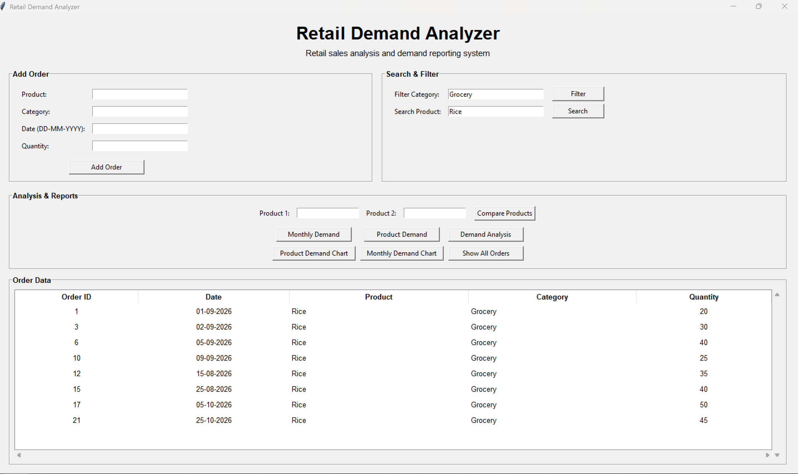

PRODUCT DEMAND ANALYZER.
Turning order data into useful business insights.
01 / PROJECT OVERVIEW
The Retail Product Demand Analyzer is a desktop application that helps users explore historical product order data. It provides tools to manage records, search and filter orders, compare demand, and understand sales patterns through reports and charts.
Built with Python, the project combines data analysis with a graphical interface to make order information easier to understand.
02 / THE RESULT

03 / KEY FEATURES
- Add and manage product order records.
- Search and filter historical order data.
- Calculate total and average demand.
- Compare products and identify high and low-demand items.
- Generate reports from the available data.
- Visualize product and monthly demand with charts.
- Store order records in CSV files.
04 / WHAT I LEARNED
- Analyzing structured data with Pandas and NumPy.
- Building a desktop GUI using Tkinter.
- Creating charts with Matplotlib.
- Reading and saving CSV records.
- Organizing code into separate Python modules.
05 / TECH STACK
06 / PROJECT LINKS
Explore the source code or access the project using the links below.